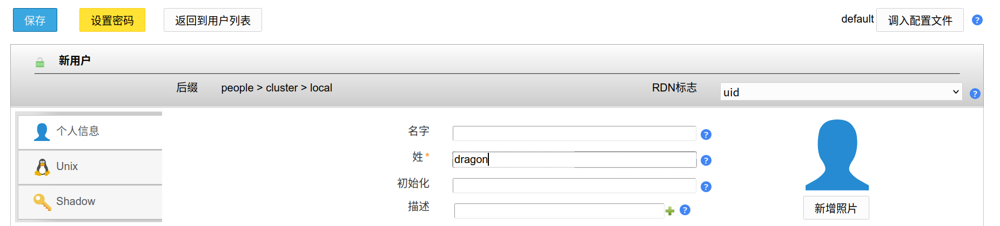

简介
此项目使用 ldapaccountmanager 作为 LDAP 管理器。
创建 Deployment
使用以下配置创建关联的 Deployment。
1
2
3
4
5
6
7
8
9
10
11
12
13
14
15
16
17
18
19
20
21
22
23
24
25
26
27
28
29
30
31
32
33
34
35
36
37
38
39
40
41
42
43
44
45
46
47
48
49
50
51
52
53
54
55
56
57
58
59
apiVersion: apps/v1
kind: Deployment
metadata:
name: ldap-account-manager
namespace: core-system
labels:
app: ldap-account-manager
type: ldap
spec:
replicas: 1
selector:
matchLabels:
app: ldap-account-manager
template:
metadata:
labels:
app: ldap-account-manager
type: ldap
spec:
containers:
- name: ldap-account-manager
image: ldapaccountmanager/lam:8.0.1
ports:
- containerPort: 80
env:
- name: LAM_SKIP_PRCONFIGURE
value: "true"
- name: LDAP_DOMAIN
valueFrom:
configMapKeyRef:
name: ldap-global-conf
key: ldap_domain
- name: LDAP_SERVER
valueFrom:
configMapKeyRef:
name: ldap-global-conf
key: ldap_url
- name: LDAP_BASE_DN
valueFrom:
configMapKeyRef:
name: ldap-global-conf
key: ldap_base_dn
- name: LDAP_USERS_DN
valueFrom:
configMapKeyRef:
name: ldap-global-conf
key: ldap_user_dn
- name: LDAP_GROUPS_DN
valueFrom:
configMapKeyRef:
name: ldap-global-conf
key: ldap_group_dn
- name: LAM_LANG
value: zh_CN
- name: LAM_PASSWORD
valueFrom:
secretKeyRef:
name: ldap-secret-admin
key: password
创建完成后使用 kubectl get pods -n core-system 查看创建结果。
创建 Service
使用以下配置创建 Service ，关联之前创建的 Deployment。
1
2
3
4
5
6
7
8
9
10
11
12
13
apiVersion: v1
kind: Service
metadata:
labels:
app: lam
type: ldap
name: lam
namespace: core-system
spec:
ports:
- port: 80
selector:
app: ldap-account-manager
创建完成后使用 kubectl get svc -n core-system 查看创建结果。
绑定 Ingress
导入此配置，绑定 Ingress, 将 LAM 映射到外部地址。注意：里面标注的内容请按照实际情况修改。
1
2
3
4
5
6
7
8
9
10
11
12
13
14
15
16
17
18
19
20
21
22
23
24
25
26
27
apiVersion: networking.k8s.io/v1
kind: Ingress
metadata:
name: ldap-ingress
namespace: core-system
labels:
type: ldap
annotations:
# 重写路径
nginx.ingress.kubernetes.io/rewrite-target: /
spec:
ingressClassName: nginx
tls:
- hosts:
- lam.d7z.net (1)
secretName: d7z-net-tls (2)
rules:
- host: lam.d7z.net (3)
http:
paths:
- path: /
pathType: Prefix
backend:
service:
name: lam (4)
port:
number: 80
-
其中
1 指定 Ingress 暴露的 Host 2 指定 Ingress 使用的 TLS 证书 secret 名称 3 指定 Ingress 使用的 Host 4 指定 Ingress 绑定的 Service
验证
访问地址 https://lam.d7z.net , 使用 LDAP 配置的管理员密码登陆，如果登陆成功则表明安装正确。
在测试时，你需要将 lam.d7z.net 改为实际的地址
|
初始化配置

创建管理员用户
前往地址 https://lam.d7z.net/lam/templates/lists/list.php?type=user ，点击创建新用户，同时配置密码，按如下所示输入保存即可。注意 RDN 标志需配置为 UID 。

创建管理员角色
前往 https://lam.d7z.net/lam/templates/tools/treeView.php 页面，在 ou=groups 下方新建 groupOfNames 对象，按如下所示输入保存即可。

| 后续相关角色创建流程均参考此流程即可。 |